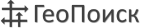

В АО «СНИИГГиМС» используется современное программное обеспечение ведущих мировых производителей, позволяющее выполнять весь комплекс камеральных геолого-геофизических работ, что позволяет выполнять работы и представлять их результаты с учетом новейших требований индустрии.
Обработка сейсморазведочных данных
Geodepth (Paradigm)
Система GeoDepth предназначена для построения 2D/3D глубинно-скоростных моделей среды любой сложности, включая отрицательные наклоны границ, шероховатые границы, взбросы, надвиги и другие сложные структурные формы.
В основе построения модели лежат всестороннее изучение и анализ скоростей суммирования, эффективных скоростей и интервальных (пластовых) скоростей миграции как по вертикальным функциям, так и вдоль горизонтов методом когерентной инверсии с учетом преломления на промежуточных границах.
Глубинные границы получают путем лучевой миграции горизонтов. Построение модели может вестись с учетом анизотропии скоростей, что значительно повышает ее качество и точность.
Достоинством технологии построения глубинно-скоростной модели в системе GeoDepth является объединение технологии миграции с процессом построения модели, что позволяет с помощью последовательных итераций контролировать и уточнять глубинно-скоростную модель, делая ее максимально эффективной для получения высококачественного изображения среды.
Geovation 2.0 /Geocluster (CGG)
Комплекс Geocluster/Geovation предназначен для обработки и построения изображений сейсмических данных. Данный пакет выпущен в 2019 г. и представляет собой платформу комплексной обработки данных,
включающую новейшие технологии в области обработки и построения изображений широкого спектра данных:
Около 500 расчетных модулей по обработке данных
Возможности обработки 2D, 3D, многокомпонентных данных наземных и морских съемок
Полный диапазон прикладных программ расширенной архитектуры для обработки и контроля качества в интерактивном режиме
TomoPlus (GeoTomo)
Tomoplus представляет собой комплексный продукт, предназначенный для получения точной глубинно-скоростной модели (ГСМ) приповерхностного слоя методом томографии и расчета длинно- и короткопериодных статических поправок, позволяющих компенсировать влияние верхней части разреза.
Пакет предлагает как традиционные решения для построения ГСМ с последующим многоитерационным уточнением, так и передовые технологии получения высокоразрешающего глубинно-скоростного изображения среды (FWIтомография, привлечение данных грави- и электроразведочных работ).
ProMAXSeisSpace (Hulliburton/Landmark)
Система обработки SeisSpaceProMAX с интуитивно понятными инструментам анализа, современными геофизическими алгоритмами представляет геофизику возможность выполнить весь перечень процедур по обработке сейсмических данных начиная с присвоения геометрии исходному полевому материалу, расчета и применения статических поправок за неоднородности ВЧР, интерактивному скоростному анализу и заканчивая миграцией Кирхгофа до суммирования и постобработкой временного разреза.
Оформите заявку на сайте, мы свяжемся с вами в ближайшее время и ответим на все интересующие вопросы
Интерпретация сейсморазведочных данных
SchlumbergerPetrel
Интегрированный комплекс Petrel позволяет интерпретировать сейсмические данные, коррелировать скважины, калибровать акустический каротаж и сейсмокаротаж, моделировать петрофизические характеристики, выполнять подсчет запасов.
Простой и эффективный процесс привязки сейсмической и скважинной информации: калибровка акустического каротажа и сейсмокаротажа, построение синтетического сейсмического импульса, извлечения сейсмического импульса с помощью детерминистического алгоритма и редакция синтетических сейсмограмм.
TheKingdomSuite (IHS)
Программныйпакет «TheKingdomSuite» (IHS) ‒ это интегрированный пакет для интерпретации геолого-геофизических данных. Представляет собой эффективное и исчерпывающее решение для интерпретации геолого-геофизических данных и одномерного и двумерного сейсмического моделирования и
включает в себя следующие приложения:
2d/3dPAK – визуализация сейсмических данных, корреляция отражающих горизонтов и тектонических нарушений в двумерном варианте, структурные картопостроения
EarthPAK – работа с данными ГИС по скважинам
SynPAK – одномерное моделирование на основе скважинных данных
ModPAK – двумерное моделирование на основе созданных одномерных моделей
VuPAK – визуализация сейсмических данных, корреляции отражающих горизонтов и тектонических нарушений в трехмерном варианте
TracePAK –дообработка сейсмического материала, фильтрация и расчет динамических характеристик сейсмической записи
RockSolidAttributes – атрибутный анализ данных
Оформите заявку на сайте, мы свяжемся с вами в ближайшее время и ответим на все интересующие вопросы
Интерпретация данных ГИС

ГеоПоиск
ГеоПоиск представляет собой систему обработки и интерпретации промысловой геофизической и смежной геологической, петрофизической и сейсмической информации.
Основные задачи и возможности:
Оперативные заключения по бурящимся скважинам в терригенных и карбонатных отложениях
Обработка закрытого ствола
Построение корреляционных схем и разрезов
Статистический анализ петрофизических параметров
Картопостроение, подсчет запасов
Визуализация геофизических данных
Контроль за разработкой
Оцифровка карт, каротажных диаграмм
Обработка АКШ, АКЦ, СГДТ, ИННК, АВПД, ЯМК, наклонометрии, профилеметрии, термометрии и др.
Оформите заявку на сайте, мы свяжемся с вами в ближайшее время и ответим на все интересующие вопросы
Бассейновое моделирование
TRINITY (Zetaware) (включая Genesis и Kinex)
GENESIS – это простое в использовании программное обеспечение для 1D моделирования погружения и зрелости с последующей трансляцией значений температурного градиента в 2D и 3D модели в Trinity. В модуле рассчитываются кинетические свойства керогена, двухкомпонентная (нефть+газ) или четырехкомпонентная (метан, жирный газ, легкая нефть, тяжелая нефть) схема
KINEX – инструмент для быстрого моделирования созревания горных пород, расчета генерации и эмиграции, состава (включая газовый фактор) и количества генерируемых УВ с дальнейшим использованием для расчетов миграции в Trinity.
TRINITY – инструмент на основе карты, предназначенный для интерактивной трехмерной миграции, отслеживания объемов и состава углеводородов в 3D и во времени. В Тринити интегрирована оценка рисков и чувствительности модели методом Монте-Карло.
Оформите заявку на сайте, мы свяжемся с вами в ближайшее время и ответим на все интересующие вопросы